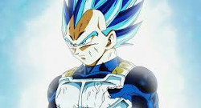

Conocido como Krilín en España y llamado Krilin en Hispanoamérica, es un personaje del manga y anime de Dragon Ball. Es uno de los principales discípulos de Kame-Sen'nin, Guerrero Z, y el mejor amigo de Son Goku. Es junto a Bulma uno de los personajes de apoyo principales de Dragon Ball, Dragon Ball Z y Dragon Ball Super. Aparece en Dragon Ball GT como personaje secundario
En el Arco de Majin Boo, se retira de las artes marciales, optando por formar una familia, como el esposo de la Androide Número 18 y el padre de Marron. En Dragon Ball Super se convierte en policía de Ciudad Satán y recupera su espíritu de lucha, regresando ocasionalmente a su vida de guerrero.
Tiene seis puntos en la frente y se rasura la cabeza cuando ejerce las artes marciales. Desde la Saga de Majin Boo como civil, suele llevar un cabello de color negro y corto, con algunos mechones que ocultan parte de sus puntos en la frente. Como Artista Marcial, Kame-Sen'nin le dio el Uniforme de la Escuela Tortuga, de color naranja con cinta azul oscuro (originalmente el traje era de color rojo y cinta negra), el cual usa siempre excepto en la Saga de Majin Boo y con el fondo de la insignia tortuga de color blanco (amarillo en Dragon Ball).
Llevaba unas zapatillas chinas de color negro y ocasionalmente la Ropa de Combate Pesada que vestía Son Goku con Dios. En el Torneo de la Saga de Majin Boo, utiliza usa un polo rojo y pantalones deportivos color beige. En La Batalla de los Dioses usa un uniforme oriental de color verde de la Escuela Tortuga. En La Resurrección de 'F' y en Dragon Ball Super usa un uniforme de policía y un casco y durante su enfrentamiento con el Ejército de Freezer y en Saga de Supervivencia Universal utiliza un dogi color naranja claro con muñequeras y correa color azul añil y zapatillas chinas
Originalmente en su niñez cuando conoció a Son Goku y entrenaron juntos con Kame-Sen'nin, Kurilín se mostraba como alguien más ambicioso, celoso y egoísta que respetaba poco las reglas. Buscó hacer lo posible para ser el favorito del maestro. Tras ocho meses de entrenamiento, su actitud se ablanda un poco al ver los logros que él mismo está obteniendo junto con su compañero en las preliminares del Torneo frente a los monjes que le hacían bullying en el Monasterio de Duolín y empieza a sentir cierta empatía por el Saiyan cuando ve que logra enfrentarse con muchos oponentes difíciles, especialmente cuando ve cómo le apoyaban Bulma y sus otros compañeros de aventuras.
Cuando se enfrentó a Son Goku en su primer entrenamiento en la 22° Edición del Torneo Mundial de las Artes Marciales y después una corta rivalidad entre ambos (Kurilín incluso admite que detestaba a Goku al principio), se convierte en el mejor amigo de Goku para toda la vida y su personalidad antigua se vuelve más bondadosa y altruista, llegando incluso a ser uno de los más tolerantes en cuanto a la personalidad tan despreocupada y juguetona que tiene Goku. Incluso ha logrado perdonar la vida a sus enemigos como en el caso de Vegeta durante la Saga Saiyan (a pedido de Goku), decisión que le beneficiaría a él y a los Guerreros Z posteriormente.
Es valiente y lleno de recursos, junto con Yamcha, se adaptó a una vida relativamente mas normal que muchos de sus amigos, buscando mujeres en su vida. Está entre los seres humanos más "normales" de sus compañeros, ya que puede ser visto usando ropa casual en los momentos de paz, además de su típico Uniforme de la Escuela Tortuga, además de participar en otras actividades cotidianas y posteriormente conseguirse un trabajo.
 |
 |
 |
 |
|
 |
 |